Note
Hallo und willkommen in der SunFounder Raspberry Pi & Arduino & ESP32 Enthusiasten-Gemeinschaft auf Facebook! Tauchen Sie tiefer ein in die Welt von Raspberry Pi, Arduino und ESP32 mit anderen Enthusiasten.
Warum beitreten?
Expertenunterstützung: Lösen Sie Nachverkaufsprobleme und technische Herausforderungen mit Hilfe unserer Gemeinschaft und unseres Teams.
Lernen & Teilen: Tauschen Sie Tipps und Anleitungen aus, um Ihre Fähigkeiten zu verbessern.
Exklusive Vorschauen: Erhalten Sie frühzeitigen Zugang zu neuen Produktankündigungen und exklusiven Einblicken.
Spezialrabatte: Genießen Sie exklusive Rabatte auf unsere neuesten Produkte.
Festliche Aktionen und Gewinnspiele: Nehmen Sie an Gewinnspielen und Feiertagsaktionen teil.
👉 Sind Sie bereit, mit uns zu erkunden und zu erschaffen? Klicken Sie auf [hier] und treten Sie heute bei!
17. APP-Steuerung
Im vorherigen Projekt haben wir uns einfach die Aufnahmen der Kamera angesehen und die AI-Erkennungsfunktion im SunFounder Controller verwendet.
In diesem Projekt werden wir versuchen, die Bewegung und Richtung des Zeus Autos mit dem Joystick-Widget in der App zu steuern. Schauen wir uns also an, wie das funktioniert.
Note
Bitte installieren Sie den SunFounder Controller aus dem APP Store(iOS) oder Google Play(Android).
Wie geht das?
Der ESP32-CAM und das Arduino-Board verwenden die gleichen RX (Empfang) und TX (Übertragung) Pins. Beim Hochladen des Codes müssen Sie daher zuerst den ESP32-CAM trennen, um Konflikte oder mögliche Probleme zu vermeiden.

Öffnen Sie die Datei
17_app_control.inoim Pfadzeus-car-main\examples\17_app_control.Nachdem der Code erfolgreich hochgeladen wurde, können Sie das ESP32-CAM einstecken und dann den Stromschalter auf EIN schieben, um das Zeus-Auto zu starten.
Wechseln Sie den Upload-Schalter auf die Seite “Run” (rechte Seite auf diesem Diagramm), um die ESP32 CAM zu starten.
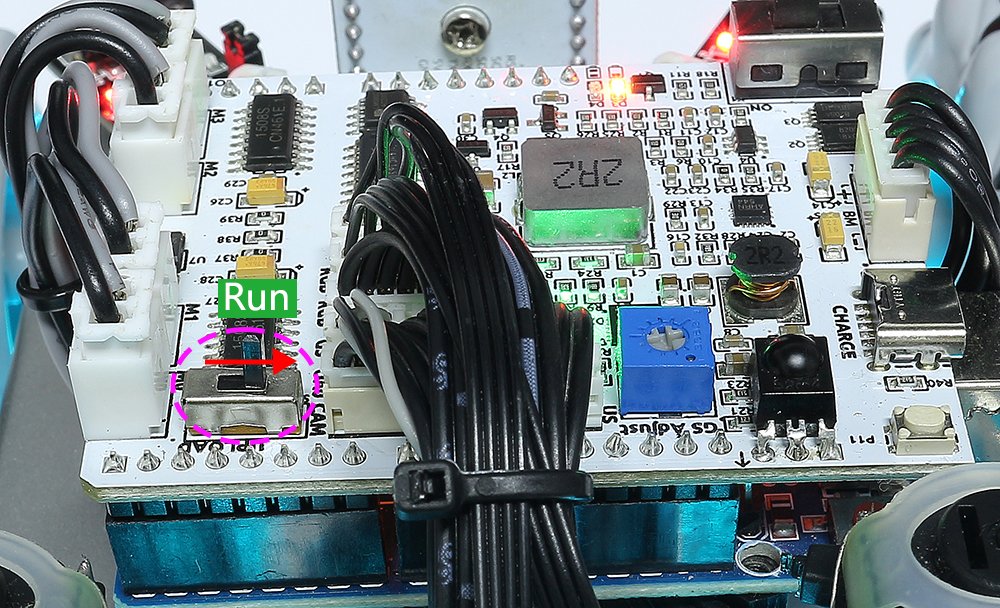Drücken Sie die Reset-Taste, um das Programm des Arduino-Boards erneut zu starten.
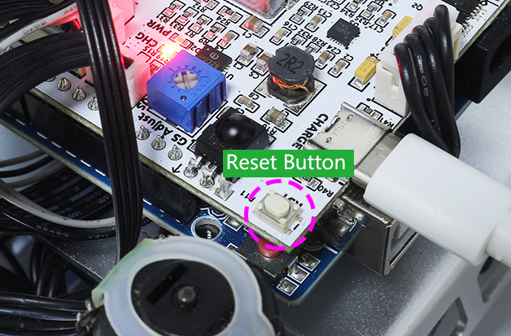Verbinden Sie sich mit dem
Zeus_CarWLAN.Finden Sie
Zeus_Carim WLAN Ihres Mobiltelefons (Tablet), geben Sie das Passwort12345678ein und stellen Sie die Verbindung her.

Der Standardverbindungsmodus ist der AP-Modus. Nach der Verbindung wird angezeigt, dass dieses WLAN-Netzwerk keinen Internetzugang hat. Wählen Sie weiterhin “Verbinden”.
Erstellen Sie einen Controller.
Um einen Controller im SunFounder Controller hinzuzufügen, klicken Sie auf das + Symbol.
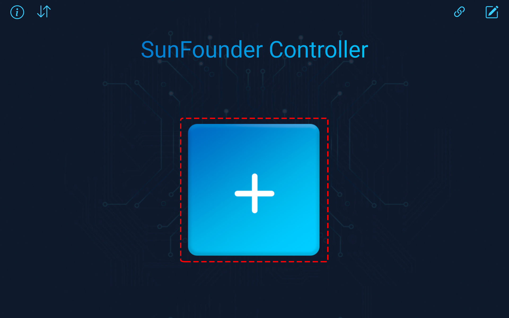Einige Produkte haben im Abschnitt “Voreinstellungen” bereits vorgefertigte Controller. Wir wählen hier jedoch ein Blanko und Dual Stick Template.
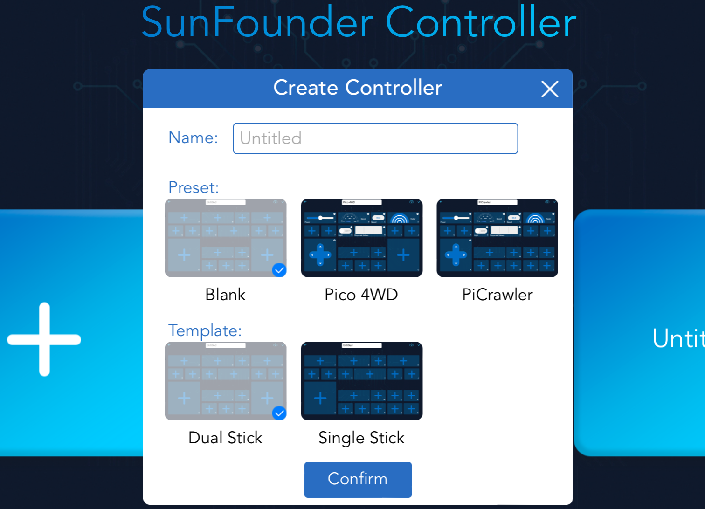
Klicken Sie im Bereich J auf das + Symbol und wählen Sie ein Schalter-Widget. Möglicherweise müssen Sie nach links wischen, um das Widget zu sehen.
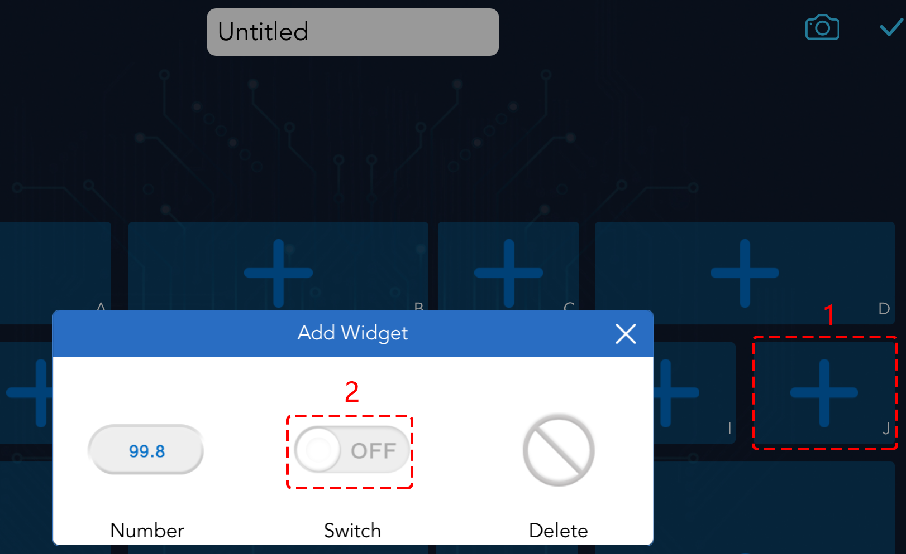Note
Wenn Sie denken, dass Sie das falsche Widget ausgewählt haben, können Sie darauf klicken und es mit der Löschtaste entfernen.
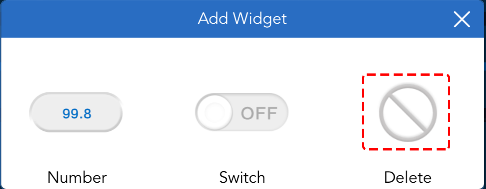
Klicken Sie auf das Einstellungssymbol in der oberen rechten Ecke, um ihm einen Namen zu geben.
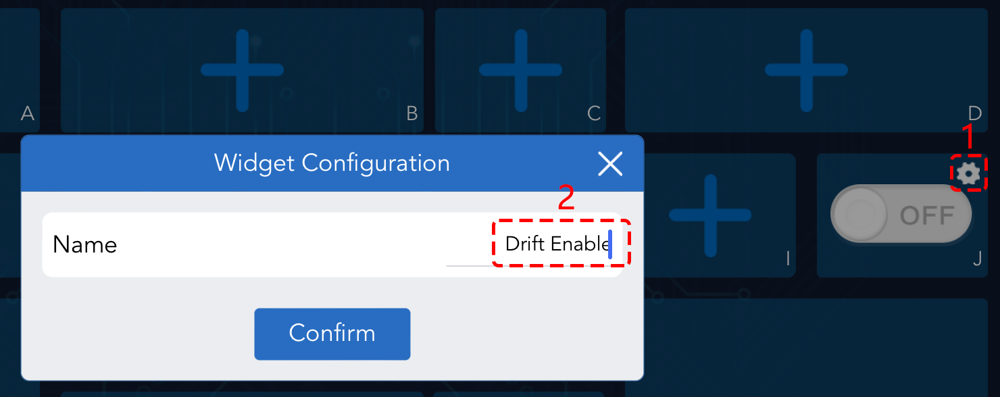Wählen Sie im Bereich K und Q ein Joystick-Widget und benennen Sie beide Widgets. Nutzen Sie dann die Taste, um den Controller zu speichern.
Der nächste Schritt ist, das Zeus Auto über die Taste mit Ihrem Gerät zu verbinden. Warten Sie einige Sekunden, und
Zeus_Car(IP)wird angezeigt. Klicken Sie darauf, um die Verbindung herzustellen.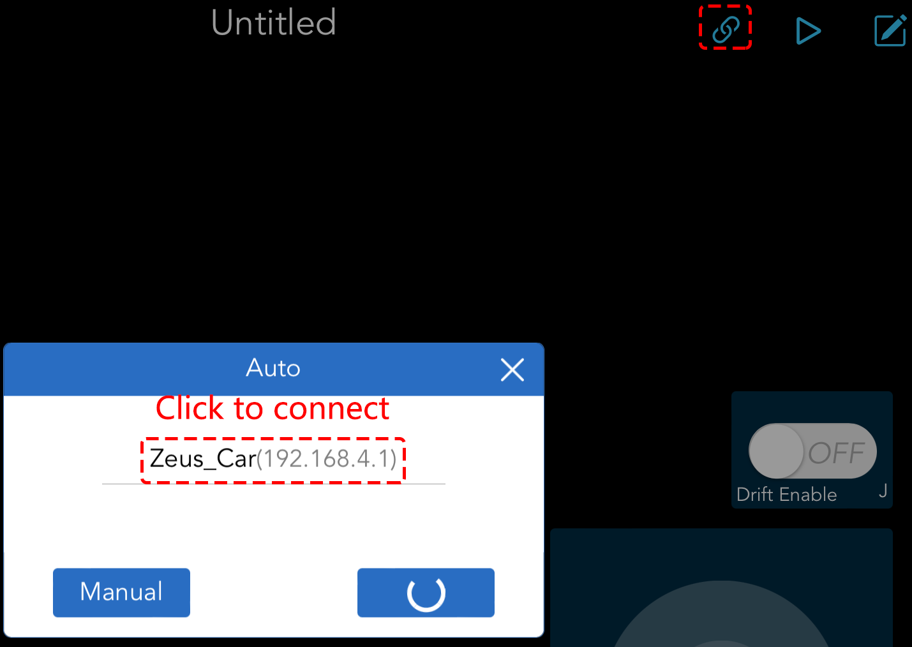Note
Bitte stellen Sie sicher, dass Ihr WLAN mit
Zeus_Carverbunden ist, wenn Sie die oben genannte Nachricht lange nicht sehen.
Starten Sie den Controller.
Nachdem die Nachricht “Erfolgreich verbunden” erscheint, klicken Sie auf die Taste. Die Kameraaufnahme wird in der App angezeigt und nun können Sie Ihr Zeus Auto mit diesen Widgets steuern.
Die Funktionen der drei Widgets sind wie folgt:
In alle Richtungen bewegen(K)
Das Zeus Auto wird sich in die entsprechende Richtung bewegen, wenn Sie das 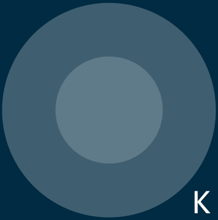 Widget wischen.
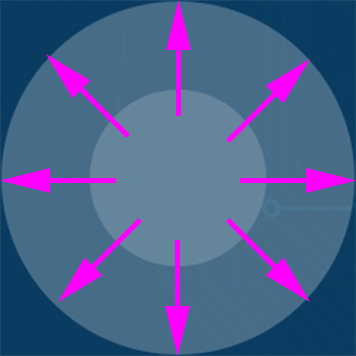Das Auto bewegt sich jedes Mal, wenn Sie wischen. Lassen Sie Ihre Hand nicht los, bewegt sich das Auto weiter.

Drift aktivieren(J)
Klicken Sie auf die 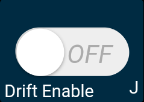 Taste, um die Drift-Funktion zu aktivieren.
Wenn Sie das 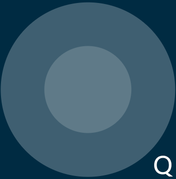 Widget gegen den Uhrzeigersinn schieben, wird das Zeus Auto nach rechts driften. Beim Loslassen stoppt das Auto an seiner aktuellen Position.

Gleichermaßen wird das Zeus Auto nach links driften, wenn Sie das Widget im Uhrzeigersinn schieben und an der aktuellen Position stoppen.

Die Richtung steuern(Q)
Ist die Taste aktiviert, wird das Widget verwendet, um das Zeus Auto links und rechts driften zu lassen.
Ist das Widget deaktiviert, steuert das Widget die Richtung des Auto-Kopfes.
Beim Schieben des Widgets gegen den Uhrzeigersinn wird das Auto ebenfalls gegen den Uhrzeigersinn drehen. Nach dem Loslassen kehrt der Kopf des Autos in die Ausgangsrichtung zurück.

Entsprechend dreht sich das Auto im Uhrzeigersinn mit dem Widget und kehrt beim Loslassen in die Ausgangsrichtung zurück.

{kind=link}
{kind=link}
{kind=link}
{kind=link}
{kind=link}
{kind=link}
{kind=link}